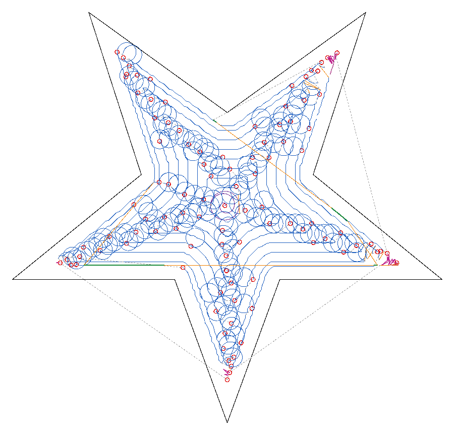
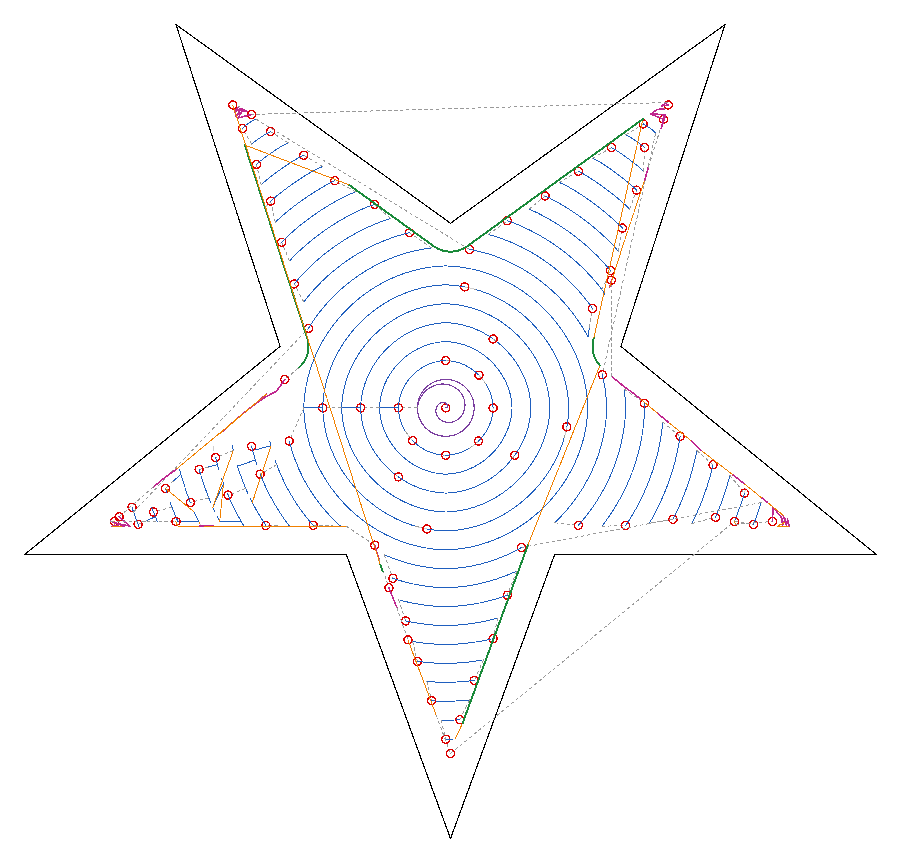
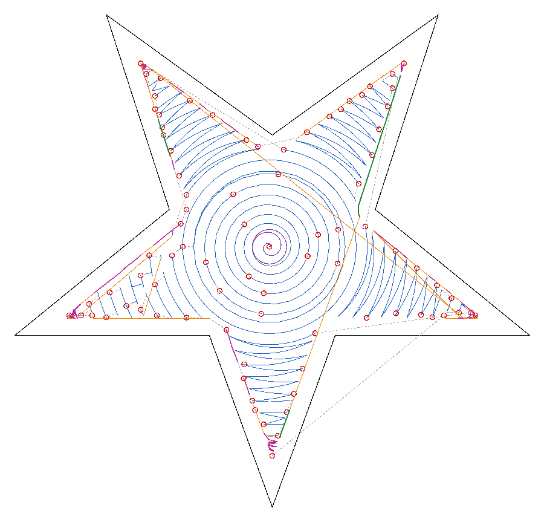

Agent

star / agent
pieces: 1
cut length: 1379.2 mm
keep-down links: 261 (596.2 mm)
entries (plunges): 25
retracts (lifts to safe Z, last included): 25
pass load (planner readout): max 0.4515 vs ceiling 0.3626; 1 of 1943 steps over; 0 exempt plunge-departure steps
over: clearing cut (segment 85) from (83.47, 40.11) to (83.35, 38.62), reading 0.4515
load by class, emitted plan (max reading, steps over of steps):
starter: max 0.3114, 0 of 160
clearing link: max 0.3277, 0 of 350
clearing: max 0.4515, 1 of 1230
wall pass link: max 0.0000, 0 of 90
wall pass: max 0.0000, 0 of 24
residue mop: max 0.2531, 0 of 21
residue mop link: max 0.1772, 0 of 68
load by class, raw plan (max reading, steps over of steps):
starter: max 0.3114, 0 of 160
clearing link: max 0.3277, 0 of 350
clearing: max 0.4651, 9 of 1239
cascade (replay
ContourSpiral

star / contour_spiral
pieces: 1
cut length: 2850.6 mm
keep-down links: 25 (141.2 mm)
entries (plunges): 101
retracts (lifts to safe Z, last included): 101
pass load (planner readout): max 0.3613 vs ceiling 0.3626; 0 of 4498 steps over; 0 exempt plunge-departure steps
load by class, emitted plan (max reading, steps over of steps):
starter: max 0.3114, 0 of 160
clearing link: max 0.3163, 0 of 23
clearing: max 0.3613, 0 of 4153
wall pass link: max 0.0000, 0 of 75
wall pass: max 0.2500, 0 of 31
residue mop: max 0.3433, 0 of 44
residue mop link: max 0.2500, 0 of 12
load by class, raw plan (max reading, steps over of steps):
starter: max 0.3114, 0 of 160
clearing: max 0.8771, 501 of 4713
cascade (replay model on the raw plan): 371 refusals, 139 cascades, 232 intrinsic
clearing: refused 371, cascade 139, intrinsic 232
(a) as at G1

star / geodesic_g1
pieces: 1
cut length: 1010.9 mm
keep-down links: 66 (206.1 mm)
entries (plunges): 86
retracts (lifts to safe Z, last included): 86
pass load (planner readout): max 0.3614 vs ceiling 0.3626; 0 of 2559 steps over; 0 exempt plunge-departure steps
load by class, emitted plan (max reading, steps over of steps):
starter: max 0.3114, 0 of 160
clearing: max 0.3614, 0 of 2031
clearing link: max 0.0000, 0 of 17
wall pass link: max 0.0481, 0 of 74
wall pass: max 0.2992, 0 of 126
residue mop: max 0.3580, 0 of 65
residue mop link: max 0.2500, 0 of 86
load by class, raw plan (max reading, steps over of steps):
starter: max 0.3114, 0 of 160
clearing join: max 0.8367, 106 of 128
clearing wrap: max 0.9196, 106 of 2043
clearing link: max 0.7012, 7 of 91
cascade (replay model on the raw plan): 139 refusals,
(a) curvature-spaced wraps

star / geodesic_curv
pieces: 1
cut length: 1051.5 mm
keep-down links: 98 (236.7 mm)
entries (plunges): 73
retracts (lifts to safe Z, last included): 73
pass load (planner readout): max 0.3581 vs ceiling 0.3626; 0 of 2716 steps over; 0 exempt plunge-departure steps
load by class, emitted plan (max reading, steps over of steps):
starter: max 0.3114, 0 of 160
clearing: max 0.3563, 0 of 2172
clearing link: max 0.1081, 0 of 22
wall pass link: max 0.0000, 0 of 22
wall pass: max 0.1562, 0 of 75
residue mop: max 0.3581, 0 of 91
residue mop link: max 0.2500, 0 of 174
load by class, raw plan (max reading, steps over of steps):
starter: max 0.3114, 0 of 160
clearing join: max 0.8956, 106 of 130
clearing wrap: max 0.9308, 38 of 2173
clearing link: max 0.3768, 1 of 82
cascade (replay model on the raw plan): 128 refusals
(a) curvature + morph (dropped)

star / geodesic_curv_morph
pieces: 1
cut length: 1381.8 mm
keep-down links: 76 (266.5 mm)
entries (plunges): 84
retracts (lifts to safe Z, last included): 84
pass load (planner readout): max 0.3625 vs ceiling 0.3626; 0 of 2775 steps over; 0 exempt plunge-departure steps
load by class, emitted plan (max reading, steps over of steps):
starter: max 0.3114, 0 of 160
clearing: max 0.3625, 0 of 2238
clearing link: max 0.1081, 0 of 22
wall pass link: max 0.0783, 0 of 33
wall pass: max 0.1562, 0 of 53
residue mop: max 0.3618, 0 of 99
residue mop link: max 0.2500, 0 of 170
load by class, raw plan (max reading, steps over of steps):
starter: max 0.3114, 0 of 160
clearing spiral: max 0.4044, 22 of 348
clearing join: max 0.8485, 44 of 68
clearing wrap: max 0.9308, 23 of 760
clearing link: max 0.3768, 1 of 82
cle